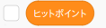
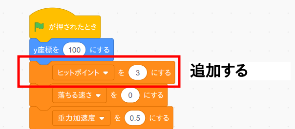
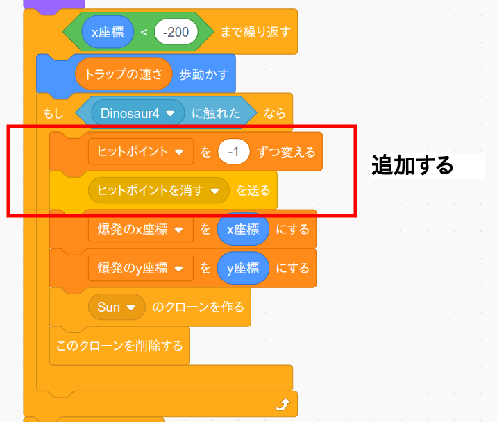
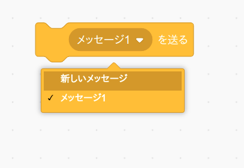
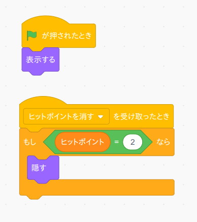

次に恐竜がトラップにぶつかったらヒットポイントを減らして表示を消すプログラムを作ります。
まず恐竜のコード画面を開き、変数「ヒットポイント」を作って下さい。
(注意) ヒットポイントのコード画面ではなくて恐竜のコード画面です。
次に恐竜のプログラムを次のように変更します。
次にトラップのコード画面を開き、プログラムを次のように変更します。
(注意) 恐竜のコード画面ではなくてトラップのコード画面です。
「ヒットポイントを消すを送る」ブロックはイベントメニューの中の「メッセージ1を送る」をセットしてから「新しいメッセージ」を選ぶと作ることが出来ます。
最後にヒットポイントのコード画面を開き次のプログラムを作成して下さい。
(注意) トラップのコード画面ではなくてヒットポイントのコード画面です。
「ヒットポイントを消す」イベントが送られてきたらヒットポイントの表示を消すプログラムになっています。 「もし〜」ブロックの意味は次のページで説明します。
作成したら旗ボタンを押して動作確認して下さい。